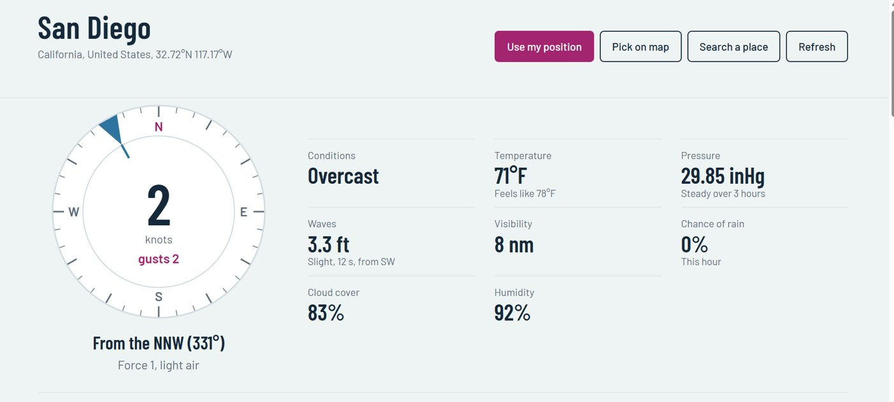
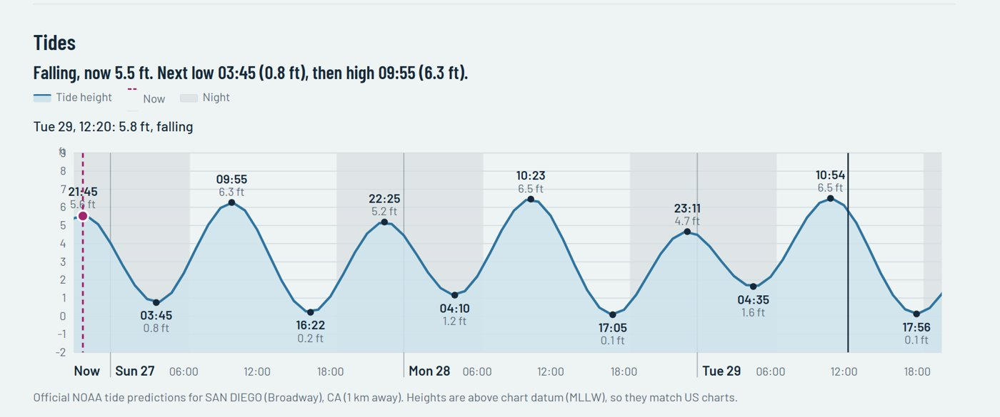
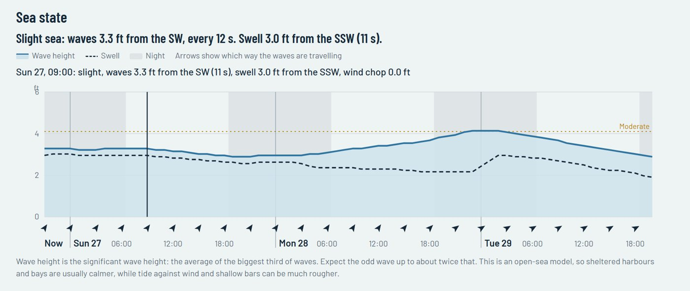
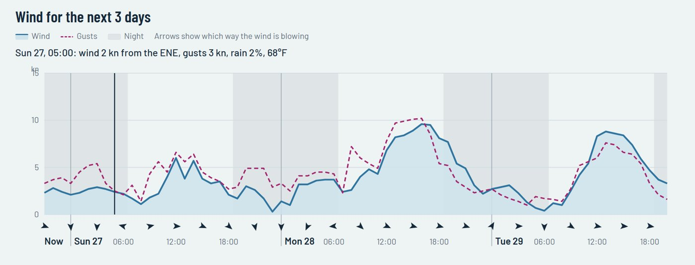
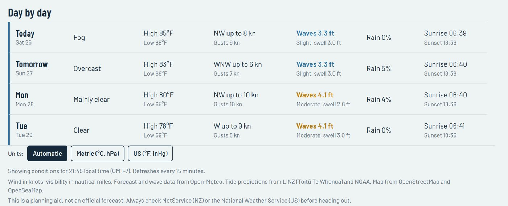

Tides
See high and low water on a tide curve with "now" marked. Touch the chart to check the tide at any time.
A free marine weather app for boaties. Tap anywhere on the water to see tide times and heights, the sea state and swell, wind and gusts in knots for the next three days, and a simple day-by-day forecast.

Wind in knots, waves in metres, visibility in nautical miles and tides front and centre—set out with large, clear charts you can read at a glance.
See high and low water on a tide curve with "now" marked. Touch the chart to check the tide at any time.
Wave height and swell hour by hour, with a plain-English sea state (Calm, Slight, Moderate, Rough) and arrows showing which way the waves are travelling.
Wind and gust speeds hour by hour, with arrows showing which way it's blowing and night-time shaded.
A simple daily summary to help you pick the best day for a trip.
Use your GPS position, tap a spot on the nautical map, or search for a place by name.
Tide predictions for around 90 New Zealand ports from LINZ, refreshed automatically every month.
Every chart has a one-line summary at the top, and you can touch any point to see that hour.




My Helm Weather works around the world, in metric or US units. Tides use official LINZ predictions in New Zealand and NOAA predictions in the United States; elsewhere they are estimated from an ocean model.
My Vessel Log keeps your engine hours, servicing and trips in order. My Helm NZ puts your position on LINZ charts with Saved Places and Anchor Watch. One-off prices, no subscription.
Always check MetService (New Zealand) or the National Weather Service (United States) and local conditions before heading out.
Yes. My Helm Weather is free to use with no account, no sign-up and no subscription.
Forecast and wave data come from Open-Meteo. Tide predictions come from LINZ (Toitū Te Whenua) in New Zealand and NOAA in the United States. Maps are from OpenStreetMap and OpenSeaMap.
Yes. Wind, sea state and forecasts work worldwide. Outside New Zealand and the United States, tides are estimated from an ocean model, so treat them as a guide.
No. It needs an internet connection to load the latest forecast, sea state and tides.
Wave forecasts cover open and coastal water. Very sheltered spots—up a river or deep in a harbour—may show no sea state, or the nearest open-water reading instead.